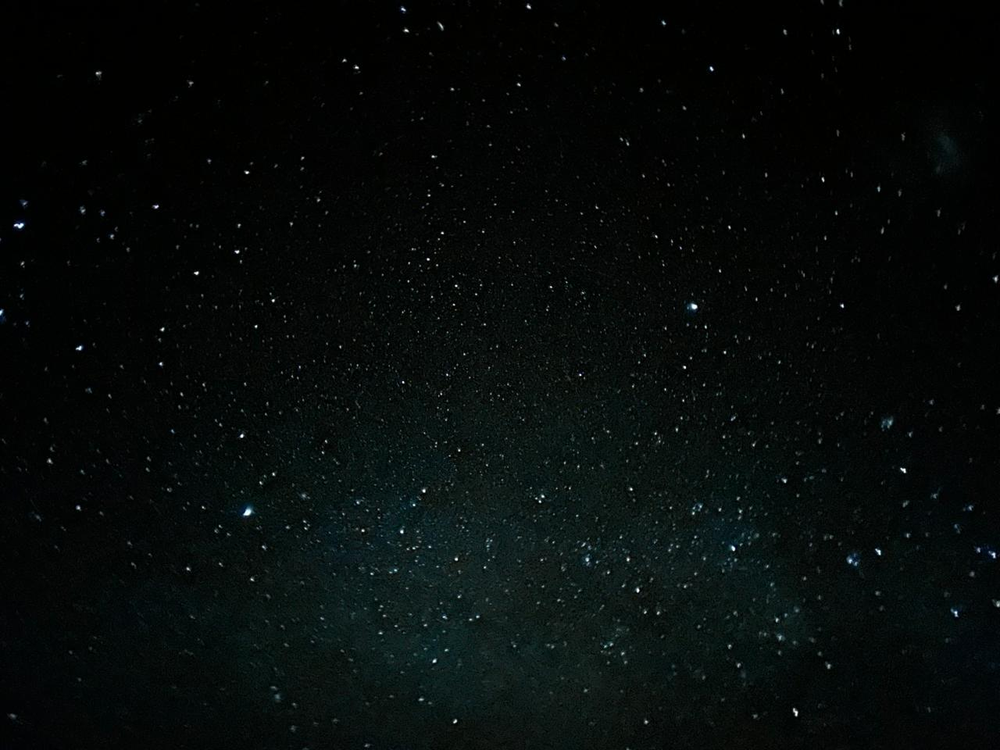

Explore Nardouw
Experience the Cederberg.

01
Bouldering
North Nardouw’s sandstone offers a varied mix of problems, from accessible warm-ups to steep, technical lines. Climb among weathered boulders, pause for the open views, and return to the cabin when the day winds down.
View on The Topo
02
Nature walks
Step out among fynbos, sandstone formations and peaceful farm roads winding through rooibos country. Take your time, take in the changing terrain and enjoy the views that open up along the way.

03
Stargazing
As daylight fades, Nardouw settles into a different rhythm. With very little artificial light, clear nights reveal a remarkable spread of stars overhead. Sit outside, look up and let the night unfold around you.

04
Bike rides
Set out along gravel roads that weave through the surrounding rooibos farms. Whether you prefer an easy morning ride or a longer outing, there is plenty of open country to discover.

05
Rooibos tours
Take a guided tour to discover how this distinctive crop is grown, harvested and prepared. It is a chance to learn more about a plant closely tied to the Cederberg.